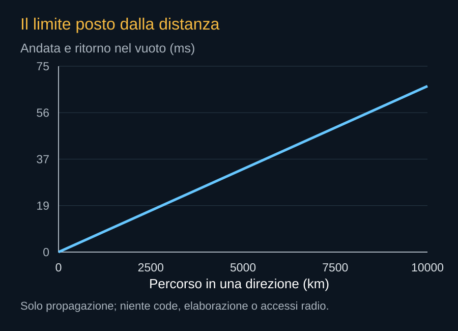

Starlink e Starmind hanno mestieri differenti. La prima rete porta dati; la seconda vuole elaborarli. Il rapporto fra le due può ridurre la necessità di costruire da zero ogni collegamento del nuovo servizio. Crea però anche dipendenze: il calcolo deve essere raggiungibile e i dati dei clienti condividono infrastrutture che svolgono già altre attività.

Seguire una richiesta
Un utente può accedere attraverso una rete terrestre, un gateway o un terminale satellitare, secondo il servizio disponibile. La richiesta viene instradata verso un nodo che abbia capacità, modello e autorizzazioni appropriati. Il nodo esegue il lavoro e il risultato torna al cliente. L’architettura non richiede necessariamente che ogni utente Starmind possieda una parabola: dipende da come viene offerto l’accesso al cloud.
Prima della richiesta, il modello e i dati necessari devono già trovarsi nel posto giusto oppure essere trasferiti. Il posizionamento del calcolo diventa un problema di logistica informativa. Un nodo libero che non ha il modello richiesto può essere meno utile di un nodo più impegnato che lo conserva già in memoria.
La distanza pone un limite
Nel vuoto la luce percorre circa 299.792 km al secondo. Mille chilometri chiedono circa 3,34 millisecondi in una direzione. Un tragitto di 3.000 km in andata e altrettanti al ritorno richiede almeno circa 20 millisecondi di sola propagazione. Il conto esclude acquisizione, radio, code, elaborazione e ogni segmento terrestre.


Questo limite non predice la latenza del servizio. Una richiesta può impiegare molto più tempo per attendere un processore o generare la risposta. Anche il cammino effettivo può essere più lungo della distanza geografica. La luce più veloce nel vuoto rispetto al vetro della fibra non garantisce che una rotta orbitale sia sempre più rapida di una connessione terrestre breve.
Comunicazioni e carichi informatici
La rete deve distinguere il trasferimento iniziale di grandi file dal traffico di richieste brevi e dalle comunicazioni di controllo. Un aggiornamento di modelli può essere pianificato; un comando di sicurezza richiede priorità. Un cliente che paga tempi di risposta stretti necessita di risorse disponibili lungo il percorso, non soltanto a bordo del satellite.
Se un lavoro viene diviso fra molti nodi, conta anche la rete fra quei nodi. Una bassa latenza fra utente e ingresso del cloud non dimostra una buona interconnessione per l’addestramento. I due problemi possono avere soluzioni diverse. È uno dei motivi per cui la costellazione non va descritta come un unico enorme rack.

.jpg){kind=link}
Integrare senza contare due volte
Usare Starlink può evitare alcuni investimenti nuovi, ma capacità e hardware mantengono un costo. Se il traffico di calcolo occupa una parte della rete, quella parte non è simultaneamente libera per ogni altro servizio. La contabilità industriale deve riconoscere questo uso, anche quando il gruppo possiede entrambe le attività.
La combinazione è interessante proprio perché trasporto e calcolo possono essere progettati congiuntamente. Per valutarla occorreranno dati su capacità assegnata, prestazioni sotto carico e comportamento nelle interruzioni. Il vantaggio sarà nel servizio che il cliente riceve, non nella somma dei numeri pubblicitari delle due costellazioni.
Fonti pubbliche e tracce
- FCC, DA 26-113: domanda accettata per l’istruttoria. 4 febbraio 2026. Deposito del 30 gennaio, fino a un milione di satelliti, 500–2.000 km. Accettazione procedurale, non autorizzazione.
- SpaceX, risposta alla FCC datata 16 settembre 2026. Documento primario scaricato e letto. Incontro del 14 settembre; inviluppi a pagina 8, rientro a pagina 9. Dichiarazioni e modelli del richiedente, non decisione della FCC.
- SpaceX, Starmind e scheda AI1. Consultata il 10 ottobre 2026. Fonte aziendale per la scheda corrente e gli obiettivi Gigasat; non rapporto di prove in volo.
- NASA, Laser Communications Relay Demonstration. Storia e operazioni del dimostratore ottico LCRD; la rete Starmind ha un’architettura differente.